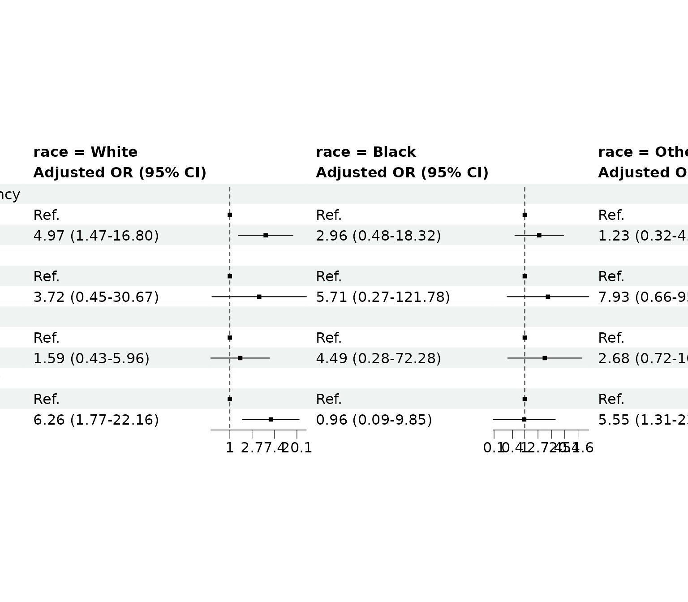

Stratified regression repeats the analysis inside each subgroup and places the results side by side. It is useful when the same association may look different across groups.
library(gtregression)
library(dplyr)
data("data_birthwt", package = "gtregression")
birthwt_data <- data_birthwt |>
mutate(
race = factor(race, levels = c(1, 2, 3),
labels = c("White", "Black", "Other")),
smoke = factor(smoke, levels = c(0, 1), labels = c("No", "Yes")),
ht = factor(ht, levels = c(0, 1), labels = c("No", "Yes")),
ui = factor(ui, levels = c(0, 1), labels = c("No", "Yes")),
low = factor(low, levels = c(0, 1), labels = c("Normal BW", "Low BW")),
ptl_cat = factor(ifelse(ptl > 0, "Yes", "No"), levels = c("No", "Yes"))
)
attr(birthwt_data$age, "label") <- "Maternal age"
attr(birthwt_data$lwt, "label") <- "Maternal weight"
attr(birthwt_data$smoke, "label") <- "Smoking during pregnancy"
attr(birthwt_data$ht, "label") <- "Hypertension"
attr(birthwt_data$ui, "label") <- "Uterine irritability"
attr(birthwt_data$ptl_cat, "label") <- "Previous preterm labour"Describe by Stratum
Start with a descriptive table by the stratifying variable. This is the companion table for the stratified regression: it helps users see the size and clinical profile of each subgroup before fitting stratum-specific models.
strata_desc <- descriptive_table(
data = birthwt_data,
exposures = c("age", "lwt", "smoke", "ht", "ui", "ptl_cat"),
by = race,
percent = column,
show_overall = last,
theme = clinical
)
strata_desc$tableCharacteristic |
White, N=96 |
Black, N=26 |
Other, N=67 |
Overall, N=189 |
|---|---|---|---|---|
Maternal age |
23.5 (20.0-29.0) |
20.5 (17.2-24.0) |
22.0 (19.0-25.0) |
23.0 (19.0-26.0) |
Maternal weight |
129.5 (112.0-143.2) |
129.0 (120.0-179.0) |
119.0 (105.0-130.0) |
121.0 (110.0-140.0) |
Smoking during pregnancy |
||||
No |
44 (45.8%) |
16 (61.5%) |
55 (82.1%) |
115 (60.8%) |
Yes |
52 (54.2%) |
10 (38.5%) |
12 (17.9%) |
74 (39.2%) |
Hypertension |
||||
No |
91 (94.8%) |
23 (88.5%) |
63 (94.0%) |
177 (93.7%) |
Yes |
5 (5.2%) |
3 (11.5%) |
4 (6.0%) |
12 (6.3%) |
Uterine irritability |
||||
No |
83 (86.5%) |
23 (88.5%) |
55 (82.1%) |
161 (85.2%) |
Yes |
13 (13.5%) |
3 (11.5%) |
12 (17.9%) |
28 (14.8%) |
Previous preterm labour |
||||
No |
82 (85.4%) |
22 (84.6%) |
55 (82.1%) |
159 (84.1%) |
Yes |
14 (14.6%) |
4 (15.4%) |
12 (17.9%) |
30 (15.9%) |
Categorical variables shown as n (%); percentages are by column. | ||||
Continuous variables shown as Median (IQR). | ||||
Univariable by Stratum
stratified_uni_reg() fits one model per exposure inside
each stratum. The result is a single wide table, with one spanner per
stratum.
strata_uni <- stratified_uni_reg(
data = birthwt_data,
outcome = low,
exposures = c("age", "lwt", "smoke", "ht", "ui", "ptl_cat"),
stratifier = race,
approach = logit,
theme = clinical
)
strata_uni$tableWhite |
Black |
Other |
|||||||
|---|---|---|---|---|---|---|---|---|---|
Characteristic |
N |
OR (95% CI) |
p-value |
N |
OR (95% CI) |
p-value |
N |
OR (95% CI) |
p-value |
Maternal age |
96 |
0.95 (0.86–1.04) |
0.226 |
26 |
1.05 (0.90–1.23) |
0.526 |
67 |
0.94 (0.84–1.05) |
0.297 |
Maternal weight |
96 |
0.98 (0.97–1.00) |
0.123 |
26 |
0.99 (0.97–1.01) |
0.517 |
67 |
0.97 (0.95–1.00) |
0.056 |
Smoking during pregnancy |
96 |
26 |
67 |
||||||
No |
Ref. |
Ref. |
Ref. |
||||||
Yes |
5.76 (1.78–18.60) |
0.003 |
3.30 (0.63–17.16) |
0.156 |
1.25 (0.35–4.46) |
0.731 |
|||
Hypertension |
96 |
26 |
67 |
||||||
No |
Ref. |
Ref. |
Ref. |
||||||
Yes |
2.22 (0.35–14.20) |
0.399 |
3.11 (0.24–39.54) |
0.382 |
5.59 (0.55–56.99) |
0.146 |
|||
Uterine irritability |
96 |
26 |
67 |
||||||
No |
Ref. |
Ref. |
Ref. |
||||||
Yes |
2.26 (0.66–7.75) |
0.196 |
3.11 (0.24–39.54) |
0.382 |
2.88 (0.80–10.33) |
0.105 |
|||
Previous preterm labour |
96 |
26 |
67 |
||||||
No |
Ref. |
Ref. |
Ref. |
||||||
Yes |
5.96 (1.80–19.72) |
0.003 |
1.44 (0.17–12.23) |
0.736 |
4.47 (1.18–16.90) |
0.027 |
|||
Stratified by: race. | |||||||||
Abbreviations: OR = Odds Ratio; CI = Confidence Interval. | |||||||||
Ref. = reference category. | |||||||||
Full Multivariable Model by Stratum
With adjust_for = NULL,
stratified_multi_reg() fits one multivariable model inside
each stratum using all supplied exposures.
strata_full <- stratified_multi_reg(
data = birthwt_data,
outcome = low,
exposures = c("age", "lwt", "smoke", "ht", "ui", "ptl_cat"),
stratifier = race,
approach = logit,
theme = clinical
)
strata_full$tableWhite |
Black |
Other |
||||
|---|---|---|---|---|---|---|
Characteristic |
Adjusted OR (95% CI) |
p-value |
Adjusted OR (95% CI) |
p-value |
Adjusted OR (95% CI) |
p-value |
Maternal age |
0.97 (0.86–1.08) |
0.548 |
0.87 (0.64–1.19) |
0.391 |
0.93 (0.81–1.07) |
0.305 |
Maternal weight |
0.99 (0.97–1.01) |
0.333 |
0.97 (0.94–1.01) |
0.136 |
0.97 (0.94–1.00) |
0.074 |
Smoking during pregnancy |
||||||
No |
Ref. |
Ref. |
Ref. |
|||
Yes |
3.35 (0.94–12.02) |
0.063 |
16.50 (0.91–298.21) |
0.058 |
0.81 (0.17–3.85) |
0.794 |
Hypertension |
||||||
No |
Ref. |
Ref. |
Ref. |
|||
Yes |
3.43 (0.39–30.08) |
0.265 |
85.06 (0.60–11,959.18) |
0.078 |
6.71 (0.52–86.08) |
0.143 |
Uterine irritability |
||||||
No |
Ref. |
Ref. |
Ref. |
|||
Yes |
1.02 (0.22–4.73) |
0.978 |
67.61 (1.42–3,225.31) |
0.033 |
2.60 (0.65–10.43) |
0.176 |
Previous preterm labour |
||||||
No |
Ref. |
Ref. |
Ref. |
|||
Yes |
4.68 (1.17–18.72) |
0.029 |
4.87 (0.11–208.59) |
0.409 |
4.13 (0.91–18.77) |
0.066 |
Stratified by: race. | ||||||
Abbreviations: OR = Odds Ratio; CI = Confidence Interval. | ||||||
Ref. = reference category. | ||||||
Complete observations included by race stratum: White: N = 96; Black: N = 26; Other: N = 67 | ||||||
Exposure-Specific Adjusted Models by Stratum
Use adjust_for when each exposure should be adjusted for
the same variables within each stratum. This mirrors
multi_reg(adjust_for = ...), but repeats the same workflow
separately inside each stratum.
strata_multi <- stratified_multi_reg(
data = birthwt_data,
outcome = low,
exposures = c("smoke", "ht", "ui", "ptl_cat"),
stratifier = race,
adjust_for = c("age", "lwt"),
approach = logit,
theme = striped
)
strata_multi$tableWhite |
Black |
Other |
||||
|---|---|---|---|---|---|---|
Characteristic |
Adjusted OR (95% CI) |
p-value |
Adjusted OR (95% CI) |
p-value |
Adjusted OR (95% CI) |
p-value |
Smoking during pregnancy |
||||||
No |
Ref. |
Ref. |
Ref. |
|||
Yes |
4.97 (1.47–16.80) |
0.010 |
2.96 (0.48–18.32) |
0.243 |
1.23 (0.32–4.80) |
0.762 |
Hypertension |
||||||
No |
Ref. |
Ref. |
Ref. |
|||
Yes |
3.72 (0.45–30.67) |
0.222 |
5.71 (0.27–121.78) |
0.264 |
7.93 (0.66–95.10) |
0.102 |
Uterine irritability |
||||||
No |
Ref. |
Ref. |
Ref. |
|||
Yes |
1.59 (0.43–5.96) |
0.488 |
4.49 (0.28–72.28) |
0.289 |
2.68 (0.72–10.05) |
0.143 |
Previous preterm labour |
||||||
No |
Ref. |
Ref. |
Ref. |
|||
Yes |
6.26 (1.77–22.16) |
0.004 |
0.96 (0.09–9.85) |
0.973 |
5.55 (1.31–23.56) |
0.020 |
Stratified by: race. | ||||||
Abbreviations: OR = Odds Ratio; CI = Confidence Interval. | ||||||
Ref. = reference category. | ||||||
Adjusted for age and lwt | ||||||
Complete observations included by race stratum: White: N = 96; Black: N = 96; Other: N = 96; White: N = 96; Black: N = 26; Other: N = 26; White: N = 26; Black: N = 26; Other: N = 67; White: N = 67; Black: N = 67; Other: N = 67 | ||||||
If a stratum cannot fit a model, the function skips that stratum with a warning and continues. This is intentional: sparse strata are common in real data, and one small subgroup should not erase the whole analysis.
Forest Plot by Stratum
forest_df() can also prepare one stratified regression
object for forest_reg(). The variable rows are kept once
and each stratum is placed in a side-by-side effect column, which is
easier to compare than repeating the full variable list for every
subgroup.
strata_forest_data <- forest_df(strata_multi)
forest_reg(
strata_forest_data,
ci_col_width = 18
)
What To Inspect
-
$table: rendered side-by-side table. -
$table_display: wide data used to build the table. -
$per_stratum: full per-stratum result objects. -
$models: fitted models by stratum. -
$model_summaries: summaries for the fitted models. -
$variable_labels: display labels used in the wide table. -
$reg_check: diagnostics for linear models.